GAMLj Models
2023
Chapter 1 The Generalized Linear Model
Draft version, mistakes may be around
keywords Generalized Linear Model, Logistic Regression, logit
1.1 Introduction
In the general linear model (cf. ??) the dependent variable must be a quantitative variable: It should express quantities, such that its values can retain all properties of the numbers: 1 is less than 2, 4 is 2*2. In this way, the mean, the variances and all the estimates can make sense. We have also seen that the GLM assumes the residuals being normally distributed, which is akin to saying that the dependent variable is normally distribute (a part from the IVs Independent Variables influence). There are many research designs that require the dependent variable to be not-normally distributed or not even quantitative. One may want to predict the vote in a referendum, the number of smartphone owned by individuals, the sex of the offspring of a herd, a choice between two or more product colors in a marketing study. In all these circumstances, the GLM cannot be applied.
We still want to use a linear model, though, because we know very well how to estimate it and interpret it. So, instead of forgoing the linear model, we change the way the linear model predicts the dependent variable, such that the estimates are unbiased and reasonable even when the dependent variable values are not quantities, or they are clearly not normally distributed.
Here comes the generalized linear model. Consider the standard regression model.
\[ \hat{y_i}=a+b x_i \] The \(\hat{y_i}\) are the predicted values, meaning the points lying on the regression line, that correspond to the expected (average) values of \(y\) for any possible value of \(x\). In the GLM, the predicted values have the same scale of the observed values: This is because \(\hat{y_i}\) can take any value (the straight line is defined for any possible value in the Y-axis), and so can \(y_i\), the observed values. When the variable is not quantitative, or it has a weird distribution, we cannot be sure that the predicted values will make sense. If one is predicting a probability, for instance, the observed values vary from 0 to 1, and thus the predicted values of a GLM will surely be nonsense, because the line will overcome the 0-1 boundaries and predicts probabilities of, say, 10 or -30, that are not admissible. If the predicted values make no sense, the model make no sense.
If we, however, express the predicted values as a transformation of the dependent variable, we can choose the right transformation to be sure that the predicted values will make sense. The transformation is called the link function (\(f()\)), and one can pick different link functions to accommodate different types of dependent variables. The generalized linear model is a linear model in which the predicted values are expressed as a transformation of the dependent variable:
\[ f(\hat{y_i})=a+b x_i \] In addition to predicting a transformation of the dependent variable, the generalized linear model does not assume the dependent variable to be normally distributed, but allows assuming different families of distribution: Binomial, multinomial, Poisson, etc.
Combining a particular link function with a distribution makes a particular application of the generalized linear model. The combination of link function and distribution makes a particular application a model suitable for predicting a particular type of dependent variable. Here is a brief recap of the generalized linear models that can be estimated with .
| Model | Link Function | Distribution | DV type |
|---|---|---|---|
| Logistic Model | Logit | Binomial | Dichotomous |
| Probit Model | Inverse cumulative normal | Binomial | Dichotomous |
| Multinomial Model | Logit | Multinomial | Categorical |
| Ordinal Model | Cumulative Logit | Logit | Ordinal |
| Poisson Model | Log | Poisson | Count (frequencies) |
| Negative Binomial Model | Log | Negative binomial | Count (frequencies) |
We are going to explore all these models, highlighting their specificity but keeping in mind that all techiques and methods doable to the GLM (cf. ??) can be applied also to the models within the generalized linear model.
As a general reference for the material discussed in this chapter, the book Agresti (2012) is a great source of information and a precise guide to the statistical details.
1.2 Logistic Model
1.2.1 The rationale
A logistic model can be estimated when the dependent variable features two groups, or two levels. The necessity to change the GLM into a different linear model becomes clear by inspecting a scatterplot between a continuous independent variable and a dichotomous dependent variable.
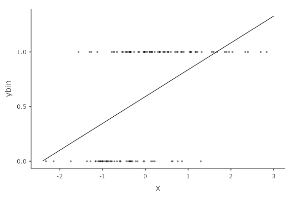
It is clear that the dependent variable scores can only be 0 or 1, and that the scatterplot will always present two horizontal stripes points, forming a cloud that cannot be represented well by a straight line. A straight line that will feature predicted values surely above 1 and below 0, providing nonsensical predicted values. The residuals, furthermore, will depend on the predicted values (cf heteroschedasticity in ??), because the line will cross a strip once (so residual is zero) and depart from it everafter (increasing the residual variance).
The solution is to change the form of predicted values such that any values can be a sensible predicted value. To achieve this, we should first notice that when one has a dichotomous dependent variable, what one is predicting is the probability of being in the group scoring 1. Indeed, the predicted values are the expected (average) values of \(y\) for each given \(x_i\). The average value of a dichotomous variable is \[ E(y)={n_1 \over N} \] where \(n_1\) is the number of cases in group 1, and N is the total sample. \(E(y)\), however, is the probability of being in group 1. Thus, \(p(x=1)=E(y)\), which we simply call \(p\).
So, the aim of the logistic model is to estimate how the probability of being in group 1 rather than 0 depends on the IVs Independent Variables scores. The probability scale, varying from 0 to 1, is not suitable to be fit by a straight line. We can change this by predicting the odd of the probability, namely:
\[ odd={p \over {1-p}} \]
The odd frees us from the upper boundary of 1, because any positive value expressed in odd can be sensible predicted value. For each positive value, one can always transform it back and get back a probability. The problems are negative values, that a straight line will always yield. Since the odd cannot be negative, we need to apply to it another transformation, namely the logarithm transformation. A logarithmic transformation transforms a positively-valued variable into a variable with all possible values, positive and negative. The function that expresses a probability into a variable admitting all possible values is the logit function:
\[ logit(y)={log \left( {p \over 1-p} \right)} \]
The logistic model is a linear model predicted the logit
\[ logit(\hat{y})=a+b_1 x_1+b_2 x_2+ ... \]Everything we can do with a linear model can be done with the logistic model, we just need to keep in mind that the interpretation of the results must consider the fact that the predicted values have a logistic scale, and not the original dependent variable scale.
1.2.2 Model Estimation
We can use our manymodels dataset to see an example of a logistic model. The dataset contains a dichotomous dependent variables called ybin, which features two groups. To keep up with our cover story, we can imaging it to represent visiting the toilet behavior. \(ybin=1\) means that the customer has visited the bar restroom, \(ybin=0\) means that the client has not visited the restroom that evening.
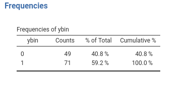
The aim of the model is to estimate the relationship between number of beers (\(x\)) and the probability of visiting the restroom (\(ybin\)).
In we launch Generalized Linear Models menu of the Linear Models icon. The first part of the user interface allows selecting the appropriated model. In our case, we selected Logistic because our dependent variable is a dichotomous variable.
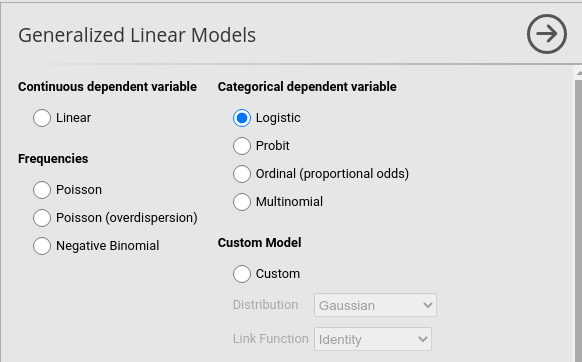
Once we have selected the model, we can set up the variables in the variables role fields, as we did in the GLM (cf. ??).
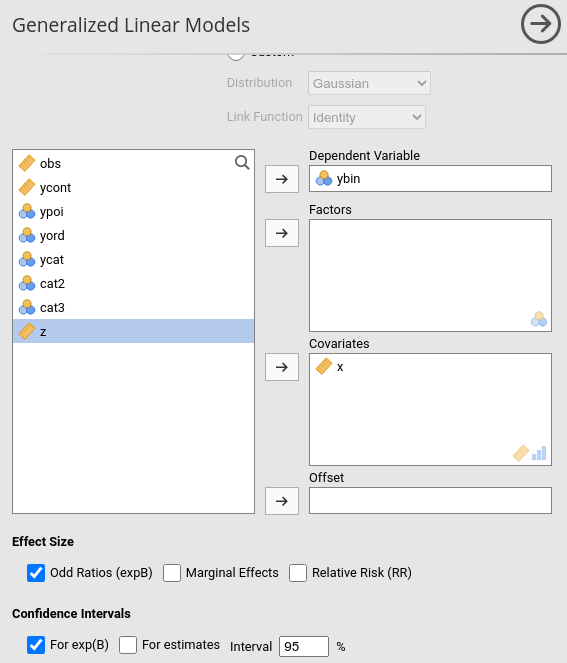
1.2.3 Model Recap
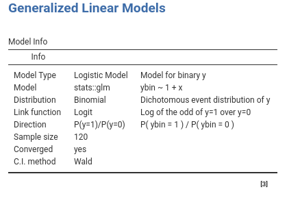
In the Model Info table we find a set of properties of the estimated model. The most important one to check is described in the direction row. When the dependent variable is dichotomous, in fact, the direction of the probability is arbitrary, so we need to know which group is predicted. models the probability of being in the group with the “largest” label value, after ordering the value labels. In our case, it models the probability of being in group ybin=1 over the probability of being in group ybin=0. This is indicated in the direction row of the table.
1.2.4 Model Fit
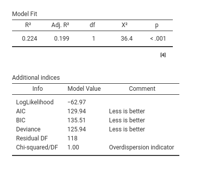
First, the model R-squared is produced with its inferential test, in this case a Chi-square test. This provides a test of the ability of the model to predict the dependent variable better than chances. The R-squared is the McFadden’s pseudo R squared (cf GAMLj help ). We can interpret it as the proportion of reduction of error, or the proportion of increased accuracy in predicting the dependent variable using our model as compared with a model without independent variables (cf. Appendix ??). The adjusted \(R^2\) is the population \(R^2\) estimate.
The additional indices reported in Additional indices reports other indices useful for model comparisons or evaluation of models, especially for other types of generalized linear models. They are rather technical, and we’ll not discuss them here.
1.2.5 Omnibus Tests
As for the GLM, we have omnibus tests for the effects of our IVs Independent Variables . They are expecially useful when dealing with categorical independent variables, because with continuous independent variables they are redundant as compare with the coefficients tests. With one IV Independent Variable , the omnibus test is equivalent to the model fit test.
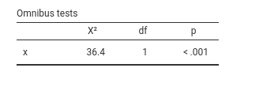
1.2.6 Coefficients
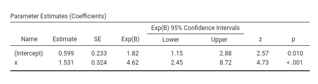
With continuous IVs Independent Variables , the coefficients Estimates are the most interesting parameters.
The Estimate column reports the regression coefficients. Their interpretation should be based on the fact that the predicted values scale is the logit scale. Thus, as regard the effect of \(x\), we can say that for one unit more in \(x\), the logit of the probability of being in the group \(ybin=1\) increases of one 1.53 units. In our cover story, for one more beer the logit of visiting the restroom increases of one unit. Being positive, we can conclude that the more you drink, the higher the probability of visiting the restroom. Being statistically significant (z-test=4.73, p.<.001), we can conclude tha the effect is different from zero.
1.2.7 Odd ratios exp(B)
The issue here is that it is very difficult to fathom the practical size of the effect. Is
1.53 units increase in the logit scale a big or small increase? Honestly, nobody knows, because the logarithm scale is difficult to master, and even if one could, the readers of the results would probably not. So, we interpret the exp(B) parameter, which is the logit after removing the logarithm scale. The logarithm scale is removed by simply passing the logit to the exponential function, hence the notation exp(B). If we remove the logarithm scale, we are left with the odd scale. However, we should pay attention to what happens to the coefficients when the scale is changed from the logit to the odd. Two pieces of information are important here. First, recall that the \(b\) coefficient in a linear model (any linear model) is the difference in the predicted values for two consecutive values of the independent variable. That is
\[ b=\hat{y}_{(x=1)}-\hat{y}_{(x=0)} \] In the logistic model, we have \[ b=log(odd_{(x=1)})-log(odd_{(x=0)}) \] The second piece of information is that when you take the exponential function of a difference between two logarithms, the result is the ratio between the logarithms arguments. That is
\[ exp(log(a)-log(b))={a \over b} \] Thus, if we take the exponential function of the logit B, we obtain the ratio between two odds
\[ exp(b)={odd_{(x=1)} \over odd_{(x=0)}} \]Therefore, exp(B) is a ratio between two odds, computed at two consecutive values of the independent variable. That is why it is called the odd ratio. It is the rate of change of the odd as you increase the independent variable of one unit. In other words, it indicates how many times the odd changes as one increases the exponential function of one unit. In our example exp(B)=4.62, so, for every beer more, the odd of going to the restroom increases of 4.62 times.
The odd ratio is the standard effect size used in logistic regression, but it is not the only one. In different disciplines other ways to quantify the logistic effects are used. provides the most common ones: Marginal effects and Relative Risk. Now we discuss the former because it is more appropriate with continuous IVs Independent Variables . We discuss the RR when we deal with categorical IV Independent Variable (cf 1.3)
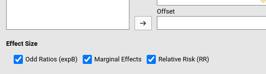
1.2.8 Marginal effects
In the same way that the exp(B) gets rid of the log scale, marginal effects get rid of the odd scale (Agresti and Tarantola 2018). If we get rid of the odd scale, we are back in the probability scale. Let’s see our model in probability scale, by asking the plot of the predicted values in the Plots panel (as we did in GLM ??).
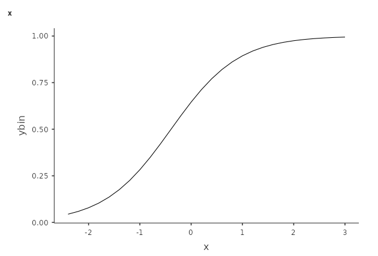
First, notice that our model is not linear, because the logistic model is linear for the logit outcome. The plots represents the predicted values in probabilities, so the linearity is lost, but the predicted values make sense. Second, recall that the coefficient of a regression tells us in which direction and how steep is the change in the predicted values as one increases the independent variables. The problem with probability-scaled predicted values is that the direction and size of the change is not constant along the independent variable scores.
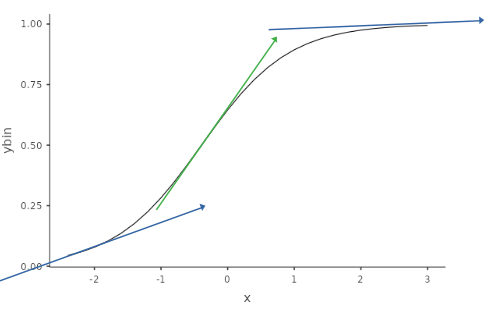
In the model above, for instance, for \(x=-2\) we can see a mildly positive increase, whereas for \(x=0\) the increase is very steep, which becomes almost flat for \(x=2\). Each of this possible increases (or change in probability) is a marginal effect. However, if we want to quantify the increase (or change) in probability due to the increase in the IV Independent Variable , we have a different marginal effect for each value of \(x\). But we can compute them all (for all observed values of \(x\)) and take the average: This is the average marginal effects (AME) produced by .
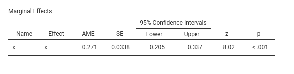
Thus, we can say that on average, the probability of visiting the restroom (\(ybin=1\)) increases of .271 as you increase beer (\(x\)) of one unit. Please consult Leeper (2021) for more details and technical information.
1.2.9 Multiple IVs
Adding independent variables in the logistic regression, as well as interaction terms, follows the same principles used for the GLM (??). The coefficients are interpreted as partial coefficients, keeping constant the other independent variables. If interactions are included, the linear effects are interpreted as main effects (averaged across leves of the moderator). Simple effects analysis and simple slopes plots can be obtained as we did in the GLM applications.
1.3 Logistic with Catecorical IVs
We know that the GLM can accommodate categorical IVs Independent Variables , and so does the logistic model. Categorical IVs Independent Variables are cast into the model using contrast variables (cf. ??), their coefficients represent group comparisons, and their omnibus tests inform us on the effect of the categorical variable on the probability of being in the group \(y=1\) rather than the group \(y=0\).
We are going to exemplify this model using the manymodels dataset, using cat2 and cat3 as our categorical IVs Independent Variables . Recall we use as a cover story the type of beer drunk for cat3 and the type of bar for cat2.
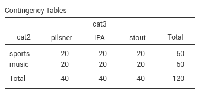
1.3.1 Model Estimation
Now we want to establish possible differences among these groups in the probability of visiting the restroom (\(ybin=1\)). We set up a logistic model in which cat2 and cat3 are factors, meaning categorical IVs Independent Variables .
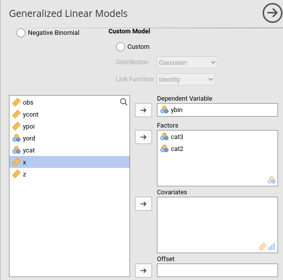
As usual in , in the presence of categorical IVs Independent Variables the model is automatically set up with main effects and interactions.
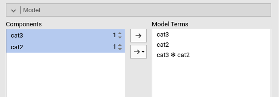
1.3.2 Model Fit
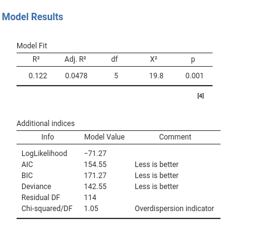
The output tables concerning the fit of the model do not really change when the independent variables are categorical. The \(R^2\) indicates the advantage of fit of our model as compared with a intercept-only model, the \(R^2_{adj}\) estimate the quantity in the population, and the inferential test (\(\chi^2\)) indicates whether our model predicts the dependent variable better than chances. More precisely, the model fit indicates if and how much our model predicts the probability of group membership better than just saying that the probability of being in group 1 is equal for every case and it is the number of cases in group 1 divided by the total number of cases.
1.3.3 Omnibus Tests
With categorical IVs Independent Variables , the crucial table is the Omnibus Tests table. Here we find the inferential tests for the main effects and the interactions.
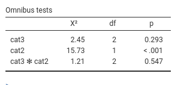
We can see that we obtain a non significant main effect for cat3 indicating that there is not enough evidence to show that the three groups defined by cat3 have different probabilities to go to the restroom (\(y=1\)). The lack of interaction indicates that the effect of cat3 is not different across levels of cat2. We do find a main effects of cat2, with \(\chi^2(1)=15.73\), p.<.001. This means that the probability of being in \(ybin=1\) group is different in the two groups defined by cat2. People in the two types of bar visit the restroom with different probability. To interpret the direction of the effect, we can look at the plot
1.3.4 Plots
The plot depicts the average probability of \(ybin=1\) for the groups defined by the variables we ask the plot for. In our case, we ask the plot for cat2.
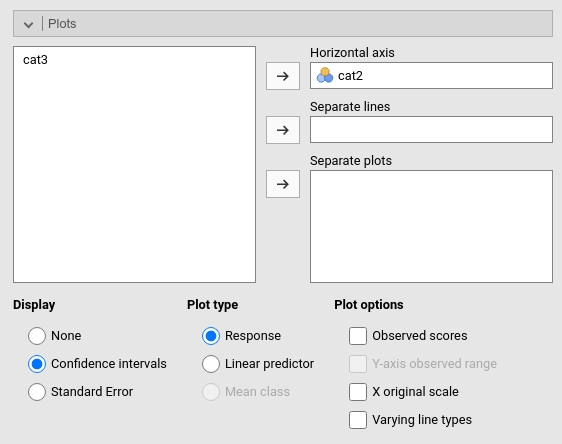
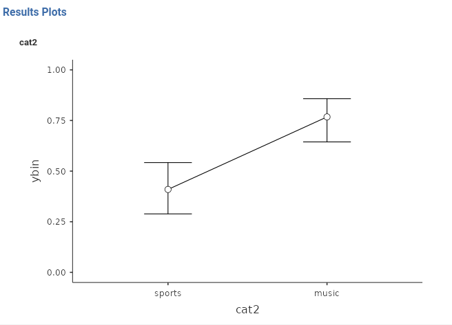
We can see that the group music has a higher probability of visiting the restroom than the group sport. We can see the same information in the Estimated Marginal Means
1.3.5 Estimated Marginal Means
Estimated marginal means gives us the average probabilities of \(ybin=1\) for the groups. They are expressed in probabilities.
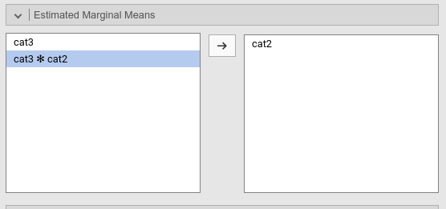 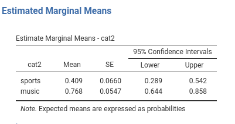
1.3.6 Relative Risk
The relative risk (RR) indices are often used when the IVs Independent Variables are categorical. Set aside some technical details (cf. Zou (2004)), you can think of the relative risk as the rate of change in the probability when comparing two groups.
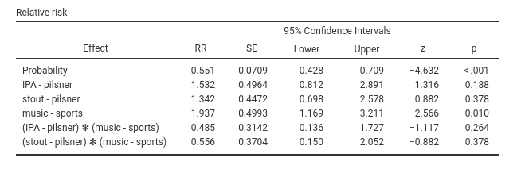
When comparing IPA with pilsner group, we have that the probability of visiting the restroom is 1.532 times larger in IPA than in pilsner. The probability is 1.342 times larger in stout than in pilsner. And so on. In music group, the probability is 1.937 times larger than in sports group.
A caveat is in order here. If one computes these values based on the estimated marginal means, they do not correspond exactly: \(.768/.409=1.89\), whereas the RR of cat2 is \(1.937\). Close, but not equal. The reason is the presence of the interactions, so it has to do with the way probabilities are averaged across the levels of other variables. The difference, however, is always rather small. For models with only one IV Independent Variable , the computations correspond exactly.
1.3.7 Marginal Effects
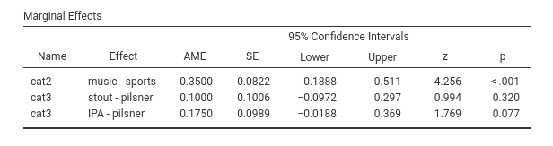
For categorical variables, the marginal means are the expected differences between groups probabilities. As for the RR, in presence of interactions the estimated difference may be slightly different as compared with the EMM difference. For models with only one IV Independent Variable , the computations correspond exactly.
1.3.8 Post-hoc tests
As for the GLM (cf ??), one can perform a series of groups comparisons using a post-hoc tests technique. The method is equivalent to the one discussed in the GLM, so we do not need to add much here. The only noticible point here is that the comparisons are estimated and tested as odd ratios, so the comparison is based on the odd in one group over the odd in the other group.
As an example, here we ask for the post-hoc comparisons within cat3.
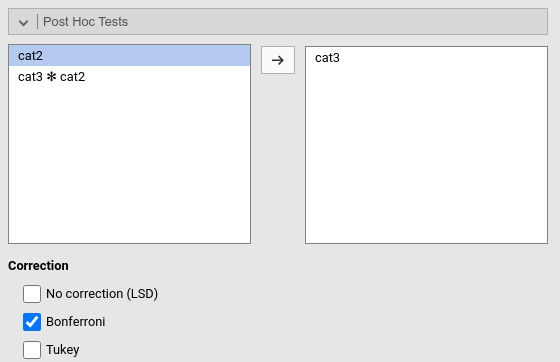
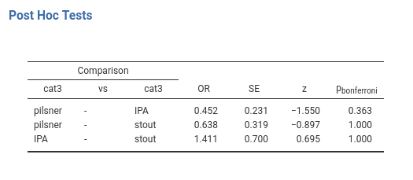
The first comparison shows an \(OR=.452\), meaning that the ratio of the pilsner group odd and the IPA group odd is .452. In other words, the pilsner group odd is .452 times the odd of the IPA group. Significance and inferential tests are interpreted as usual, keeping in mind that the p-values are adjusted for the number of comparisons carried out.
1.4 Probit Model
The probit model (cf Wiki) is practically equivalent to the logistic model. All examples, options and interpretations are the same, so we are not going to explore it in details. The reason offers the probit model is because there are several disciplines in which this model is more commonly used than the logistic model. The aim of the two models is the same: Predicting a dichotomous dependent by its relations with a set of IVs Independent Variables .
The only difference between the logistic and the probit model is the link function (1.1). Rather than predicting the logit of the probability, the probit model uses the probit of the probability.
The probit function uses the inverse of the cumulative distribution function of the normal distribution. In a nutshell, imagine a histogram: The cumulative distribution function of the normal distribution associates a probability to any possible value of the X-axis. Its inverse return the X-axis value for any probability value, yielding the predicted values in a scale that admits any positive or negative value. In other words, it does what the logit does, with a different function.
The fact that the logit and the probit models give almost identical results can be easily understood by looking at the way the two link functions transform probabilities in real values: practically in the same way.
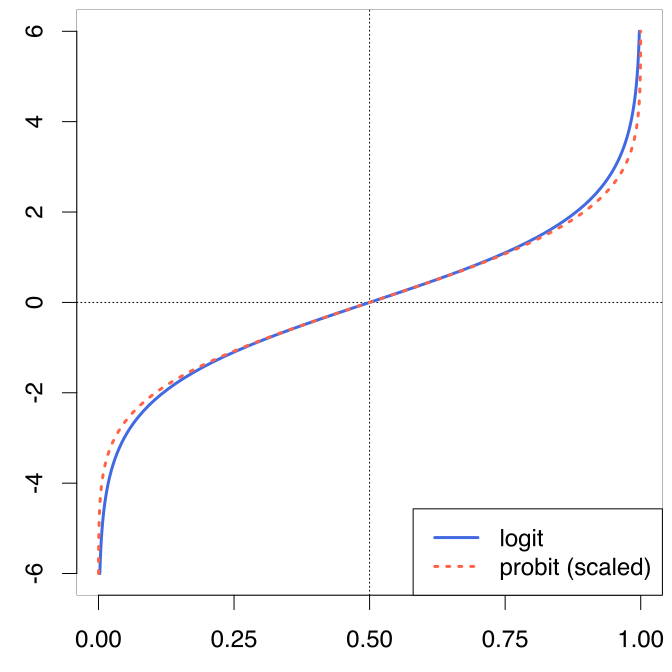
1.5 The Multinomial Model
1.5.1 Rationale
Sooner or later a dependent variable with more than two groups will cross our path. A choice may be added to the experimental outcome, a third group may be necessary to exhaust a classification, a set of products needs to be tested. When the dependent variable features more than two groups, the logistic or probit model cannot be used. It must be generalized into the Multinomial Model. A multinomial model is logically equivalent to estimating a set of logistic regressions, one for each dummy variable (cf. ?? and ??) representing the categorical dependent variable.
Consider a three group variable, with levels A, B and C. To represent it with a set of dummy variables we need 2 dummies.
| Levels | D1 | D2 |
|---|---|---|
| A | 0 | 0 |
| B | 1 | 0 |
| C | 0 | 1 |
D1 compares level B with level A, and D2 compares level C with level A. We do not need any other comparison to exhaust the variability in the dependent variable (cf Appendix ??). If now we use a logistic model to predict each of these dummies with the independent variables, we can estimate the effects of the independent variables on the probability of belonging to a group rather than another. Thus, a set of logistic regressions would do the job.
\[\begin{align*} logit(D1) &= a_1 + b_1 \cdot x \\ logit(D2) &= a_2 + b_2 \cdot x \\ \end{align*}\]
or, equivalently
\[\begin{align*} log({p(B) \over p(A)}) &= a_1 + b_1 \cdot x \\ log({p(C) \over p(A)}) &= a_2 + b_2 \cdot x \\ \end{align*}\]
The overall model fit will be given by the cumulative fit of the two logistic models; the omnibus test of \(x\) will be given by testing that both \(b_1\) and \(b_2\) are zero, and the specific effects of \(x\) on the comparisons is given by the \(b_1\) and \(b_2\) coefficients. This will be repeated for \(K-1\) logistic models, where \(K\) is the number of levels of the dependent variable.
1.5.2 Model Estimation
To exemplify, we use our manymodels dataset, which has a variable named ycat. This variable has three levels. To give some names to its levels and keep up with the bar cover story, imagine the three levels are the choice of an activity to do in the bar: 1=play darts, 2=chatting, 3=dancing.
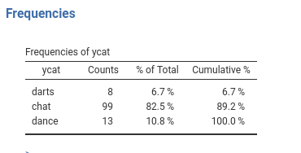
Thus, we want to estimate how the number of beer drunk (\(x\)) influences the probability of being in any of these three groups (\(ycat\)).
We first select Multinomial in the model selection tab, and then set up the dependent variable and the independent variable.
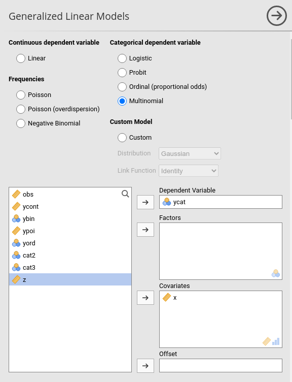
1.5.3 Model Recap
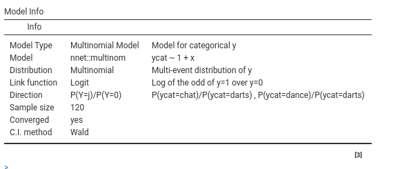
This table is useful to remind us what we are estimating in particular, so our interpretation will be correct. In the row direction, we can see
\[
P(Y=j)/P(Y=0)
\]
This means that we are predicting the (log of) the odd of each level \(j\) against level 0. The specification of the levels is in the adjacent column. Here we see
\[
P(ycat=chat)/P(ycat=darts), P(ycat=dance)/P(ycat=darts)
\]
meaning that the first logistic we meet would predict the odd of being in group chat rather than darts, the second predicts the odd of being in dance rather than darts.
Before looking at the specific comparisons, we have the overall fit and tests.
1.5.4 Overal Fit
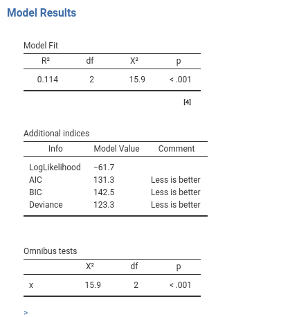
As usual, the \(R^2\) tells us the improvement in fit due to our independent variables, and its inferential test provides a test of the hypothesis that our model predicts the dependent variable better than chances. The Ominibus tests are interesting here: They test the null hypothesis that the independent variable(s) has no effect on the probabilities of belonging to the three groups, thus they provide an overall test across the logistic models predicting the dummies. In our case, we can say that beers (\(x\)) influences the choice of the activity (\(ycat\)), with \(\chi^2(2)=15.9\), \(p.<.001\).
How the independent variable influences the group probabilities can be seen with a plot and by inspecting the coefficients.
1.5.5 Plots
Plot of probabilities are very useful to interpret multinomial models. For multinomial models, the plot depicts one line for each level of the dependent variable. Each line depicts the expected probability of being in that group as a function of the independent variables (plots are produced like for any other model, so it is not shown here. original X-scale option is selected as well).
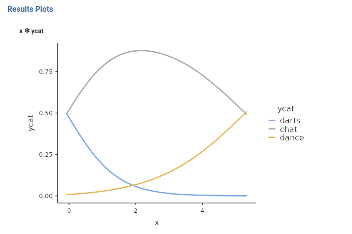
Here we see how the effect of beers (\(x\)) unfolds into probabilities differences. For low level of beers, it is very unlikely to dance, but this group becomes more likely as beers (\(x\)) increases. chats and darts start at the same level of probability, they diverge as beers (\(x\)) increases: darts becomes less and less likely, whereas chats increases to decrease again for high levels of beers (\(x\)). With the plot, a full picture of the effect can be obtained and a clear interpretation of the results can be given.
1.5.6 Coefficients
One can also examine the specific effects of the independent variable(s) on the groups comparisons in the Parameter Estimates (Coefficients) table. Here there are the individual logistic models predicting the dummies representing the dependent variable.
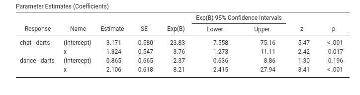
Focusing on the effect of \(x\), we can say that as \(x\) increases, the odd of chatting rather than playing darts increases of 3.76 times, \(exp(B)=3.75\), a significant increase (\(z=2.42\),\(p=.017\)). Even stronger is the effect of \(x\) on the odd of being dancing rather than playing darts. The odd increases of 8.21 times for each unit more of \(x\).
The other options of the multinomial models are logically equivalent to the options one can use with the GLM (??) or the logistic model (1.2). However, there are some peculiar features that are worth mentioning.
1.5.7 Post Hoc Tests
Let’s introduce a categorical variable cat3 (the type of beer in the story), so we can see the post-hoc tests.
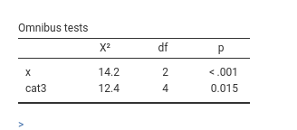 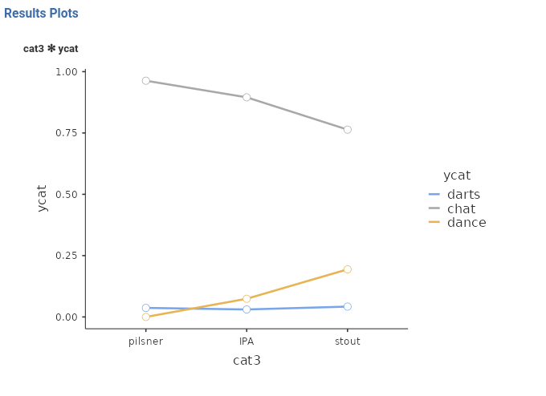
The omnibus test suggest a main effect of cat3 on the probability of ycat, the plot suggests that for the darts group there is not much of a difference due to cat3, which is a little stronger for the dance group and for the chat group. This is the logic of the post hoc tests in multinomial models: the probability of each group of the dependent variable is compared between each pair of groups of the independent variable (for input, see ??).
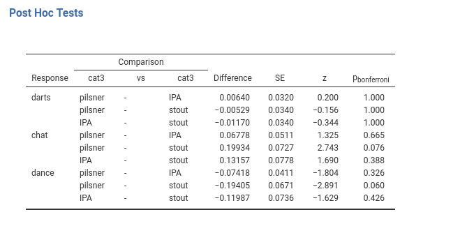
The cat3 groups do not differ in the probability of being in the darts group. The cat3 groups do not differ in the probability of being in the chat group, although some difference can be seen for the comparison pilsner-stout. The cat3 groups do not differ in the probability of being in the dance group, although some difference can be seen for the comparison pilsner-stout, again.
We noticed that cat3 had a significant effect on the dependent variable (Omnibus Test), but no post hoc test reaches a significant level. That is not an error, it could happen because of the correction for multiplicity. Because in multinomial models the comparisons are usually many, the adjustment may result in very under-powered comparisons. The indication is to use the post-hoc only when strictly necessary, namely when one has really no idea of what to expect from our data.
1.5.8 Marginal Effects
Recall the marginal effects in the logistic model (cf. 1.2.8 and 1.3.7). They are the average change in probability (probabilities differences) along a continuous IV Independent Variable or between two groups defined by a categorical IV Independent Variable . In multinomial models, they have the same interpretation, but they are produced for each comparison (dummy) between the dependent variable groups. In our example with x and cat3 IVs Independent Variables , we have the following marginal effects.
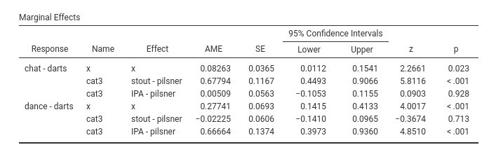
The first row presents the average marginal effect, \(AME=.082\) of x on the comparison between chat and darts: that is, the average change in probability of being in the chat group rather than the darts group along the values of x. The second row (\(AME=.677\)) is the difference in the probability of being in group chat rather than darts between the group stout and group pilsner. The third row indicates the difference in the probability of being in group chat rather than darts between the group stout and group pilsner.
The following three rows are the same comparisons, but operated on the probability of being in group dance rather than in group darts.
1.5.9 Simple Effects
We now examine a multinomial model with z (remember extraversion) and cat3 as independent variables, with the addition of their interaction as a term in the model.
The omnibus tests are the following:
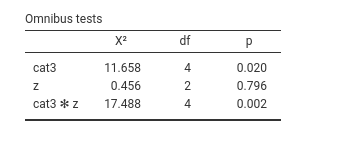
We find an interaction between the continuous variable z and the categorical variable cat3. To explore this interaction we can estimate and test the simple slopes of z at different levels of cat3. This estimation provides the numerical version of a simple slopes plot, that we can obtain in Plots as usual
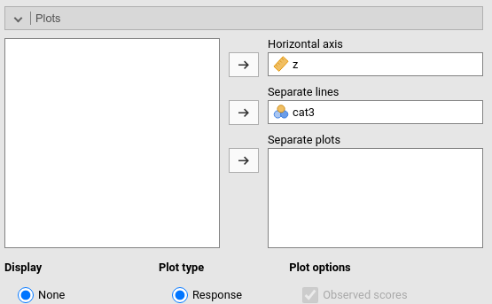
The plots (rearanged) looks like this:
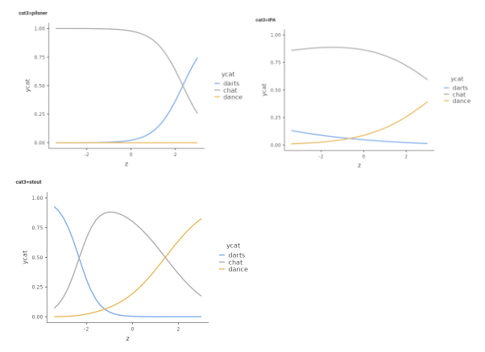
These are the effects (difference in probability) of z on ycat estimated for the thee groups defined by cat3. To know where the effects are or are not present, we can ask for the simple effects.
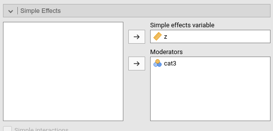
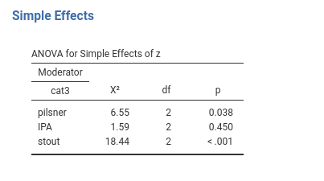
It is clear that the effect of z is different from zero for the group pilsner, \(\chi^2(2)=6.55\),\(p.=.038\), it is very weak and not significant for the group IPA, \(\chi^2(2)=1.59\),\(p.=.450\), and is significant and strong for the group stout, \(\chi^2(2)=18.44\),\(p.<.001\).
1.6 The Ordinal Model
Consider now a different type of variable: immagine we asked the people at the bar to express their appreciation for the bar. We gave them 5 options
- I will never come back
- I may come back sometime
- I will come back once in while
- I will come back often
- I would like to be here every day
Silly as it may seems, this variable represents a very common type of variable in science. It produces 5 possible values, that are clearly ordered in terms of preferences for the bar. Despite that, we cannot honestly assume that this is a continuous variable, because the distance between, say, I will never come back and I may come back sometime cannot confidently be assumed to be the same as the distance between I will come back often and I would like to be here every day. Nevertheless, It is plain to see that I will never come back conveys much less appreciation than I will come back often, which is in turn less appreciative than I would like to be here every day . So, this is an ordinal variable (Stevens 1946). The argument become more serious if we focus on the Likert scale (Likert 1932), one of the most frequently used measurement instrument in social science. Different authors have claimed that a Likert scale is an ordinal variable and it cannot be considered a continuous scale, whereas other have claimed that the assumption of continuity does not really bias the results of parametric analyses. See for instance Wu and Leung (2017) and the references there. We are not going to solve this conundrum here. We assume one has decided that the dependent variable is of the ordinal type.
1.6.1 Rationale
Assume we treat an ordinal variable as a multinomial variable,featuring \(K\) levels. If we do that, we treat the levels as completely unordered, and thus the only information that we are using to estimate the generalized model is that the \(K\) levels are different. As we have seen in the discussion of multinomial regression (1.5), we would need K-1 logistic models to obtain our results. In doing that, however, we over-parameterize the model, because we do not need so many coefficients to describe the effect of an IV Independent Variable on the dependent variable. We can take advantage of the order of the levels to simplify the model (its results, not really its logic).
Consider our ordinal \(y=\{1,2,3,4,5\}\), and say that each \(i\) level (the choice made by the participant in the example) has probability \(\pi_i\). We can ask what is the probability of choosing I will never come back , or the probability of choosing either I will never come back or I may come back sometime, or the probability of choosing I will come back once in while or lover levels, etc. In other words, we can focus on the probability of choosing up to a level, or equivalently, a level or any other below it. This is called cumulative probability, and it can be written like this:
\[ p(y\le k)=\sum_{i=1}^k \pi_i \] meaning: the probability to choose any level up to \(k\) is the sum of the probabilities of the levels less or equal to \(k\). As we have seen above (1.2), the linear model does not work well in predicting probabilities, so let express these probabilities as logits:
\[ logit_k=log \left( {p(y\le k) \over p(y > k)}\right)=log \left({\sum_{i=1}^k \pi_i \over \sum_{i=k+1}^K \pi_i} \right) \] which translates into predicting the log of the odd of choosing up to one level over choosing any other higher levels. That can be done with a linear model
\[ logit_k=a_k+b_k x \]
In this set of models, each \(b_k\) coefficient would tell us the effect of \(x\) on the (logit) probability of choosing up to one level over choosing any other higher level. However, that would not be much of simplification, because we still have \(K-1\) linear models, one for each levels, apart from the last one. But we can assume, and check, that the effect of \(x\) on the logit is the same for each level \(k\), so we end up with only one regression coefficient:
\[ logit_k=a_k+b x \] This is the proportional odds assumption, which often gives its name to the model: the propotional odds model. Thus, the ordinal regression is a generalized linear model that uses the cumulative-logit as link function and assumes proportional odds.
To interpret the coefficients, however, we need an extra step. So far , the \(b\) is the influence of \(x\) in choosing \(k\) or below, so a positive value means that as you increase \(x\) it is more likely to choose a lower level. That is counter-intuitive, therefore the model is estimated reversing the sign of \(b\), so that the interpretation comes more natural.
\[ logit_k=a_k-b x \]
In this model, intercepts are the log-odds of choosing a level or below that level. The regression coefficient describes the increase in log-odds of choosing a level or above associated with a one unit increase in \(x\). In other words, the \(b\) coefficient indicates how much the independent variable increases the probability of choosing a higher level, so taking a step up on the ordinal scale.
Another way to see how the model works, is to consider the following plots.
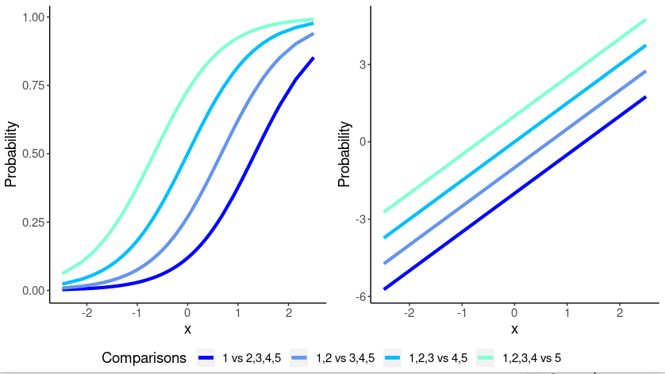
On the left panel, we have the cumulative probability functions for each level compared with any other higher level. When the probability is predicted as a logit, its relationship with the independent variable is linearized (right panel), so we are fitting regression lines, with different intercept but the same slope (lines are parallel). This is the proportional odds model.
provides the proportional odds model as implemented by the R package ordinal. Details can be found in the ordinal package vignettes.
1.6.2 Model Estimation
We simply set the model as Ordinal at the top of the input variable, and set our dependent and independent variables as for any other model. Here we inserted as independent variables both a continuous (\(x\)) and a categorical variable (\(cat3\)), so we can explore more options and techniques within the ordinal model.
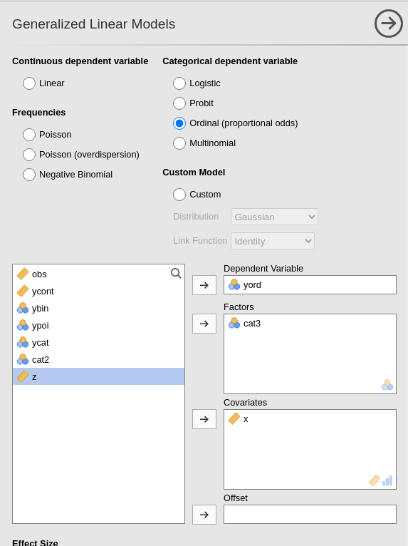
1.6.3 Model Recap
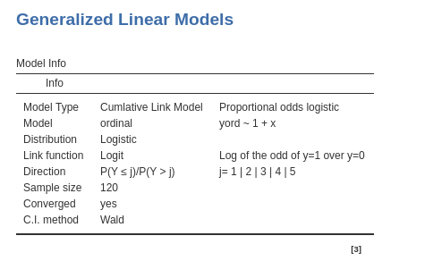
In the Model Info table we find a set of properties of the estimated model, as we have seen for all the other generalized linear models. The direction row indicates how the levels of the dependent variables are ordered, in this example as 1|2|3|4|5. This is usually obvious, but in some cases it is important to check that the order of the dependent variable levels is indeed how intended by the user.
1.6.4 Parallel Lines test
Before looking at the results of the model estimation, we should remember that the ordinal model estimated by is a proportional odds model, in which we assume that the coefficient associated with an independent variable is the same for all logit estimated along the dependent variable scale (cf 1.6). provides a test for this assumption, usually named parallel lines test. It is named like that because proportional odds functions, when estimated in the logit scale, are equivalent to parallel lines.
The logic of the test is simple: the model with all coefficients of an independent variable set equal is compared with a model in which the coefficients are allowed to vary from logit to logit. The two models are compared with a log-likelihood ratio test. If the test is not significant, we have indication that the assumption of proportional odd is met. When significant, we have indication that a breach to the assumption may be in place.
The test can be found in the input Options panel.
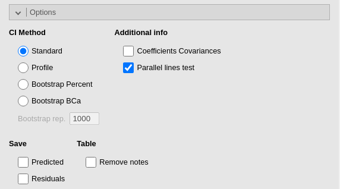
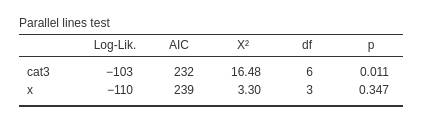
The test is performed for each independent variable effect. We can see that no problem arises with \(x\), because the \(\chi^2\) is clearly not significant. A doubt can be cast on cat3, that show that the assumption of proportional odds does not perfectly apply to its effects (\(\chi^2=16.48\), \(p=.011\)). It should be said, however, that this tests are quite conservative, so one should be very lenient in their interpretation. One can argue, for instance, that the deviation from the assumption does not seem very strong, so the model can be saved and the results interpreted anyway.
1.6.5 Model Fit
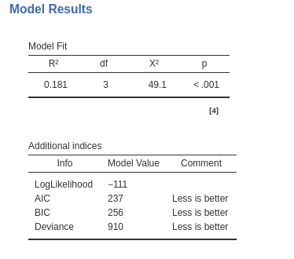
The model R-squared is produced with its inferential test, the Chi-square test. This provides a test of the ability of the model to predict the dependent variable better than chances. The R-squared is the McFadden’s pseudo R squared (cf GAMLj help ). We can interpret it as the proportion of reduction of error, or the proportion of increased accuracy in predicting the dependent variable using our model as compared with a model without independent variables (cf. Appendix ??). The adjusted \(R^2\) is not produced for the ordinal model.
The additional indices reported in Additional indices reports other indices useful for model comparisons or evaluation of models.
1.6.6 Omnibus Tests
As for all the other generalized linear models, we have omnibus tests for the effects of our IVs Independent Variables . They are especially useful when dealing with categorical independent variables, because with continuous independent variables they are redundant as compare with the coefficients tests.
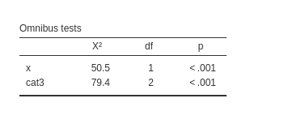
We noticed in our example that both variables show significant effects. Thus, while keeping the other constant, each variable is able to influence the probability of choosing a higher level of the ordinal variable. We can now examine these effects to understand their size and direction.
1.6.7 Coefficients
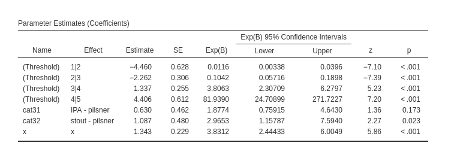
The first rows of the table report the intercepts, in this context called thresholds. Those are the expected logit (under Estimate column) or the expected odd (under exp(b) column) of the regression fitted for each logit. They are seldom interpreted, but they are basically the odds of choosing a level or lower over choosing any higher level, for all IVs Independent Variables equal to zero.
The \(x\) effect \(b=1.343\) and its \(exp(B)=3.831\) indicate the effect of the independent variable on the probability of choosing an higher level: for one unit more in \(x\), the odd of passing from one level to the higher level increases of \(3.831\) times. Thus, the more beers one drinks (\(x\)), the higher is the appreciation of the bar. As regards the effects of cat3, as compared with pilsner group, the IPA group has an odd of increasing the chosen level .630 times smaller, whereas for the stout group the odd is 1.097 times larger. The latter comparison is significant.
We can probe the categorical variable effect by displaying and evaluating the expected means.
1.6.8 Estimated marginal means
Obtained as for any other model in the input (cf 1.3.5), the estimated marginal means for the ordered model are expected mean classes: the expected mean level chosen, broken down by groups defined by the independent variable.
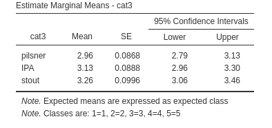
In this example, we see that the group pilsner, on average, is choosing level 3, that in our example means, I will come back once in while, whereas both group IPA and stout tend to be between I will come back once in while and I will come back often. Classes are always marked from 1 to \(K\), where \(K\) is the number of levels in the dependent variable. The correspondence between class and mark is illustrated in the footnote of the table.
1.6.9 Post-hoc tests
Post-hoc tests are asked in the input and interpreted as for any other model (cf. ??)
The only remark needed here is that for ordinal models, the group comparisons are conducted using the logit, testing them as comparisons of groups based on the difference in logit. However, in the table, these comparisons are reported as odds ratios, where the difference in logit is exponentiated before being displayed.
In our example, we can see that IPA group shows an odd of increasing the dependent variable level \(Ratio=1.88\) times larger than the pilsner, not significantly different, \(z=1.363\), \(p.=518\). The stout group shows an odd of increasing the dependent variable level \(Ratio=2.97\) times larger than the pilsner group, not significantly different, \(z=2.265\), \(p.=0.070\), whereas stout group shows an odd of increasing the dependent variable level \(Ratio=1.58\) times larger than the pilsner, again not significantly different, \(z=0.980\), \(p.=.982\). We can notice that the same odd ratios were reported in the Parameter Estimates (Coefficients) table, with different p-values because no adjustment was operated there.
1.6.10 Plot
When dealing with generalized linear model, it is always a good idea to have a look at the effects in terms association of the predicted values with the independent variables. For ordinal models, we can choose two types of predicted values:
- Response, the predicted values are expressed in probability of belonging to a level of the dependent variable. In our example, the plot diplays the probability of choosing any of the response level as a function of the independent variables.
- Mean class, the predicted values are the expected classes, coded from 1 to \(K\). In our example it would display the expected average classes as a funtion of the independent variable values. Let us see both versions.
The input is as usual.
By default we have the Response option, so the type is the probability of being in any of the dependent variable level.
Here, we can track the probability function to observe the likelihood of different levels as we increase the independent variable. It is evident that the higher levels (4 and 5) become increasingly likely as we increase \(x\), while the lower levels (1 and 2) become less probable.
A similar information can be obtained if we select Mean class in Plot type.
Here we see what is the average expected level as a function of \(x\). For low values of \(x\), participants pick level 2 on average, where as you increase \(x\), the level chosen increases such that for high level of \(x\), the average level is between 4 and 5.
Depending on the specific application, one of the two plot types may result useful.
1.7 The Poisson Model
1.7.1 Distribution
Very often, rather than measuring quantities we count stuff. For example, we may have a dependent variable that indicates the number of smartphones a person possesses, the count of close friends a teenager has, or the frequency of email checks per hour. These variables are referred to as count data, where the variable scores represent frequencies rather than actual quantities.
Frequencies exhibit their own distinct characteristics when it comes to their distributions. In general terms, count variables reflect the occurrence of events, regardless of the specific event being measured (such as having a friend, checking email, or owning a phone). The distribution of the event counts tends to vary depending on the rarity or commonality of the event. For instance, if an event is rare, like the number of smartphones a person possesses, a large proportion of individuals may have just one event (one phone), while fewer individuals may have two or three phones, and having four or five phones becomes extremely uncommon. Thus, the distribution would be highly skewed.
Consider, for instance, the behavior of checking emails within a working environment. If email checks are infrequent in this context, it is likely that the majority of individuals either do not check their email or check it only once during a given time period. Only a few individuals may check their email twice or three times, and the occurrence of higher frequency checks becomes increasingly rare. One ends up with a distribution as follows:
In the previous example, where people checked their email once per time period, the mean frequency was 1. Now, let’s consider a different working environment where it is more customary to check email, resulting in a higher mean frequency of 3. In this scenario, some individuals may still check their email infrequently, but it is less likely compared to before. Additionally, there will be a greater likelihood of individuals checking their email three or four times. As a result, the distribution becomes less skewed, as illustrated below:
If we consider an environment where checking email is even more common, let’s say 10 times per time period, we would observe increased variability both to the right and left of the mean. As a result, the distribution begins to resemble a bell-shaped distribution, as shown below:
The distribution that accounts for this behavior of count data is called the Poisson distribution and it models count data very well when events are rare, thus when the average count is low. The Possisson distribition is a probability distribution that models the number of events that occur within a fixed interval of time or space when these events occur independently and at a constant average rate. It applies to whole numbers (integers) and its shape depends on its mean, that is the average rate of occurrence of the events within the given interval.
1.7.2 Link function
Consider a count variable such as the one depicted in the following histogram:
Assuming a positive correlation between the count variable and a continuous variable, when we examine the relationship on a scatterplot, it becomes evident that a straight line is insufficient to capture the pattern accurately.
Specifically, when the count variable is zero, the straight line would be horizontal, failing to capture the subsequent increase reflecting the positive relationship between the variables.
A more suitable approach would be to employ an exponential function to accurately describe the relationship between the variables.
This would mean defining the model
\[ \hat{y}_i=e^{(a+bx_i)} \] where \(e^x\) means the exponential of \(x\). However, we prefer to work with linear models, so we linearize the model by taking the logarithm of both size, which gives (recall that \(ln(e^x)=x\)):
\[ ln(\hat{y}_i)=a+bx_i \]
The Poisson model is a generalized linear model in which the predicted values are represented as the logarithm of the counts of the dependent variable, following a Poisson distribution. The regression coefficients in this model indicate the change in the logarithm of the expected counts, and the exponentiated form (\(exp(B)\)) of these coefficients represents the rate of change in the counts as the independent variable increases by one unit
1.7.3 Estimating the model
Work in progress: incomplete version